Analytics and BI with Couchbase Cloud
This is the third tutorial in the series of “First Timer” tutorials. By following the steps in order, you will end up with an analytics report that illustrates how Couchbase Cloud can power analysis and data visualization. Let’s get going!
Run Your First Analytics Query
Couchbase Cloud comes equipped with a powerful MPP-based analytics service that provides a parallel data-management capability; allowing the running of complex queries against millions of records without any impact to overall database performance.
-
Create Analytics datasets.
Analytics datasets are containers that hold collections of JSON objects. They are similar to tables in an RDBMS or keyspaces in N1QL. A dataset is linked to a Couchbase bucket, so that the dataset can ingest data from Couchbase Server.
Create an analytics dataset using data from the
beer-samplebucket by following these steps.-
Log in to your Couchbase Cloud account, then click Clusters in the side navigation.
Click your cluster name to display the cluster overview screen.
-
In the Tools menu, select Analytics Workbench.
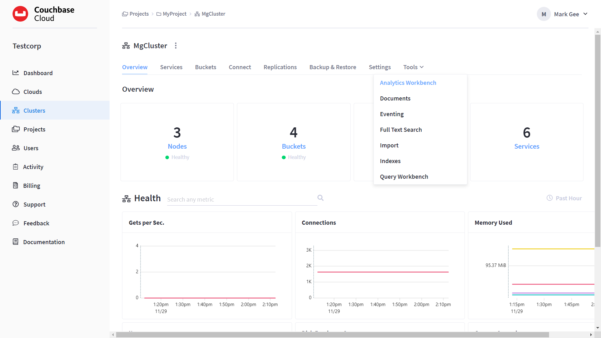The Analytics Editor is displayed.
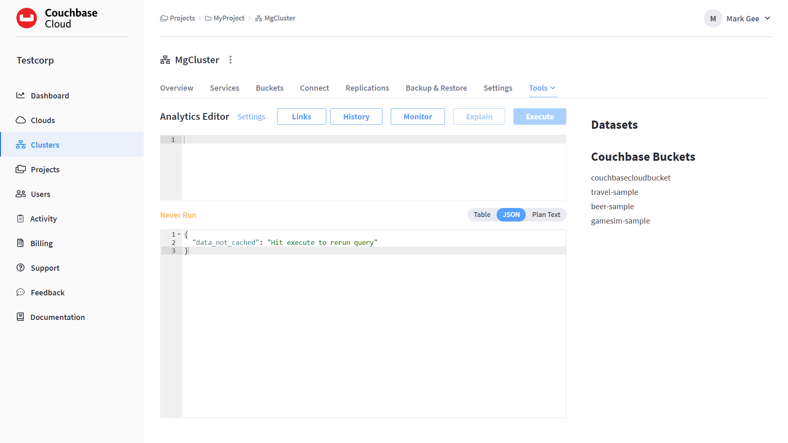 -
In the Analytics Editor, paste this statement to create a dataset of breweries made up of all “brewery” type documents in the beer-sample bucket.
CREATE DATASET breweries ON `beer-sample` WHERE `type` = "brewery";Click Execute to create the dataset.
You will see the brewery dataset with a yellow indicator to the right of the editor.
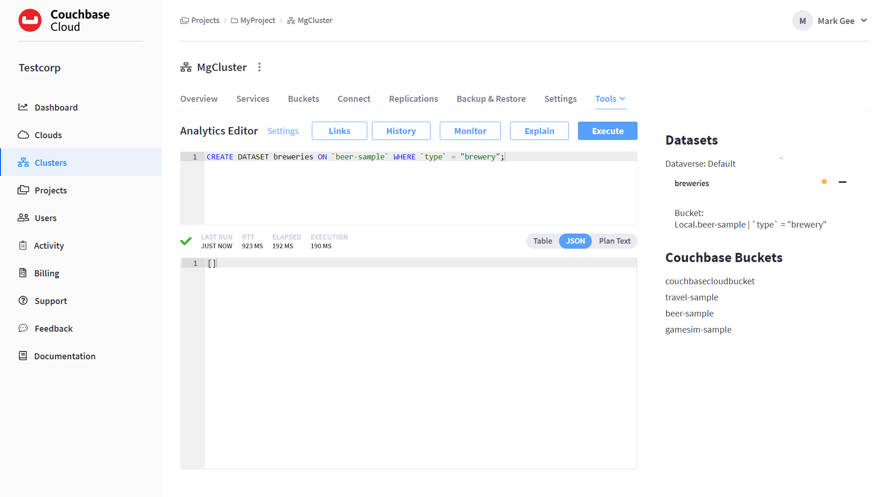 -
Next create a dataset of beers made up of all “beer” type documents in the beer-sample bucket.
CREATE DATASET beers ON `beer-sample` WHERE `type` = "beer";Click Execute. The beers dataset appears with a yellow indicator to the right of the editor.
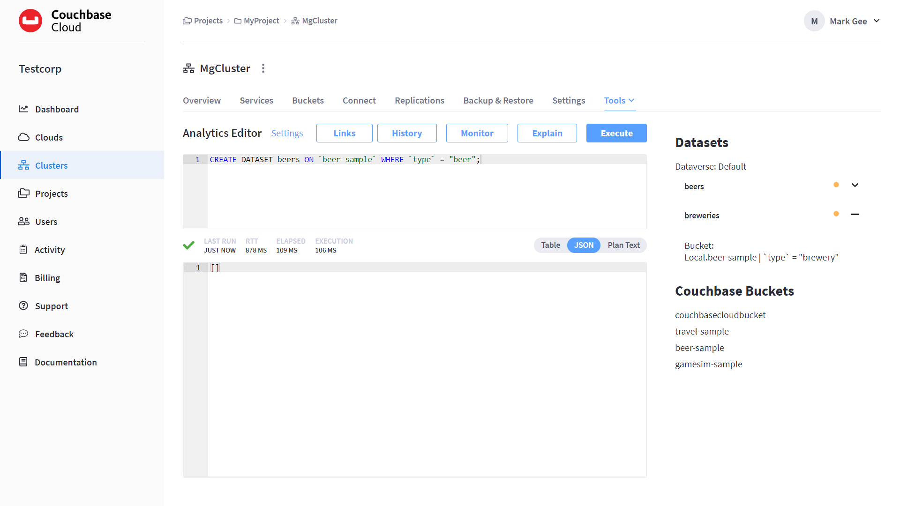
-
-
Link the Analytics Datasets to your local.
To link the datasets to your local beer-sample bucket, paste the following statement into the Analytics Editor:
CONNECT LINK Local;Click Execute. The datasets should display to the right of the Analytics Editor each with a green icon, indicating successful dataset creation.
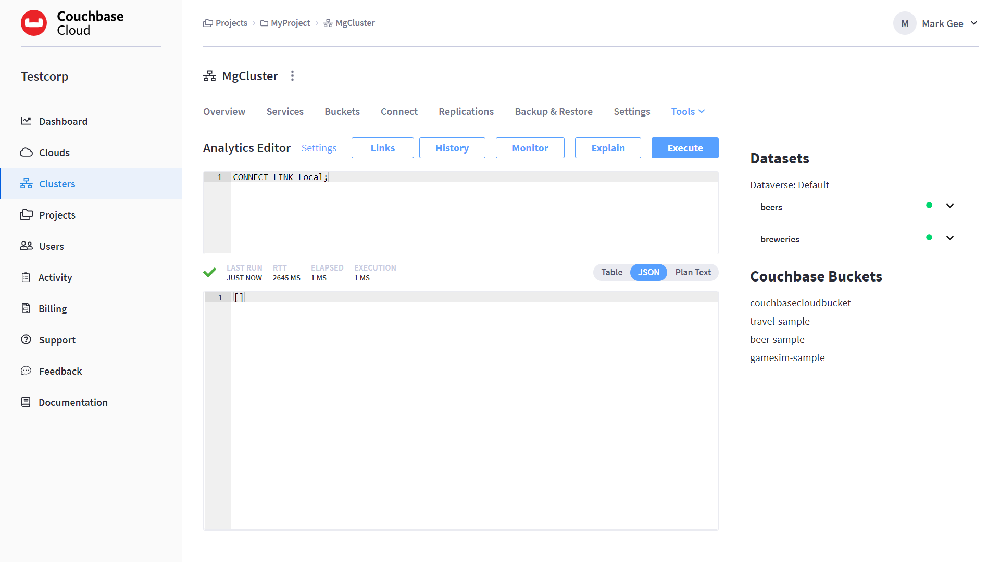You have just created 2 datasets linked to your local beer-sample bucket.
-
Now you can analyze the data using N1QL for Analytics.
A big advantage is that N1QL for Analytics can construct new objects to return based on combinations of variable bindings. This gives it the power to do projections and joins much like those done using multi-table FROM clauses in SQL. For example, suppose that you wanted a list of all breweries paired with their associated beers, with the list enumerating the brewery name and the beer name for each such pair. You can do this as follows in N1QL for Analytics while also limiting the answer set size to 3 results.
Copy and paste the following query into to the Analytics Editor:
SELECT bw.name AS brewer, br.name AS beer FROM breweries bw, beers br WHERE br.brewery_id = meta(bw).id ORDER BY bw.name, br.name LIMIT 3;Click Execute.
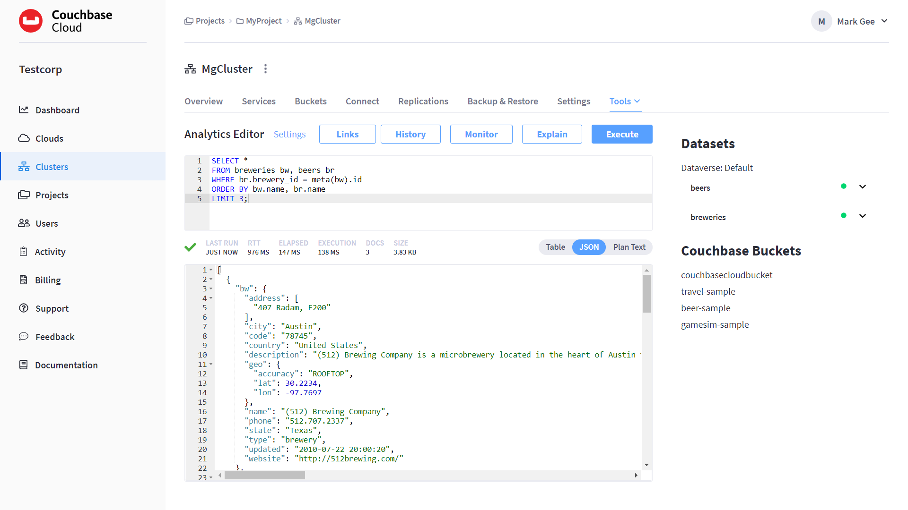Congratulations! You just ran your first analytics query and see the results in the Analytics Editor.
Run an Analytics Query with JOINs
Now let’s try a more advanced N1QL for Analytics query using JOINs.
JOINs enable you to join datasets for richer analysis.
Left outer joins are particularly important in SQL, for example, to print a summary of customers and orders grouped by customer, without omitting those customers who haven’t placed any orders yet.
N1QL for Analytics supports nesting, both of queries and of query results, and the combination allows for a cleaner and more natural approach to such queries. As an example, suppose you want each brewery to produce an object that contains the brewery name along with a list of all of the brewery’s offered beer names and alcohol percentages. In the flat (also known as 1NF) world of SQL, approximating this query would involve a left outer join between breweries and beers, ordered by brewery, with the brewery name being repeated along side each beer’s information. In the richer (NoSQL) world of N1QL for Analytics this use case can be handled more naturally as follows.
Copy the following query and paste it into the Analytics Editor:
SELECT bw.name AS brewer,
(SELECT br.name, br.abv FROM beers br
WHERE br.brewery_id = meta(bw).id
ORDER BY br.name) AS beers
FROM breweries bw
ORDER BY bw.name
LIMIT 2;Click Execute. The results are displayed as follows:
Congratulations, you have successfully created analytics datasets using data in your Couchbase Cloud cluster, and have used N1QL to query and join the datasets.
Go here for more information and examples about the Couchbase Analytics Service.
Visualizing Data on Couchbase Cloud Using Business Intelligence Tools
Couchbase Cloud Analytics can be analyzed directly using popular business intelligence tools.
Prerequisites
-
In this example we will utilize Tableau Desktop to visualize data in a Couchbase Cloud Analytics Dataset leveraging the CData JDBC Driver For Couchbase. To complete this exercise you can download and install the free trials of Tableau Desktop and the CData driver if you don’t already have these tools installed.
-
You must also have your Couchbase Cloud cluster endpoint URL and your cluster Security Certificate handy to make the connection to Couchbase Cloud using the CData JDBC connector.
-
To get these settings, click Clusters in the side menu then click on your cluster name.
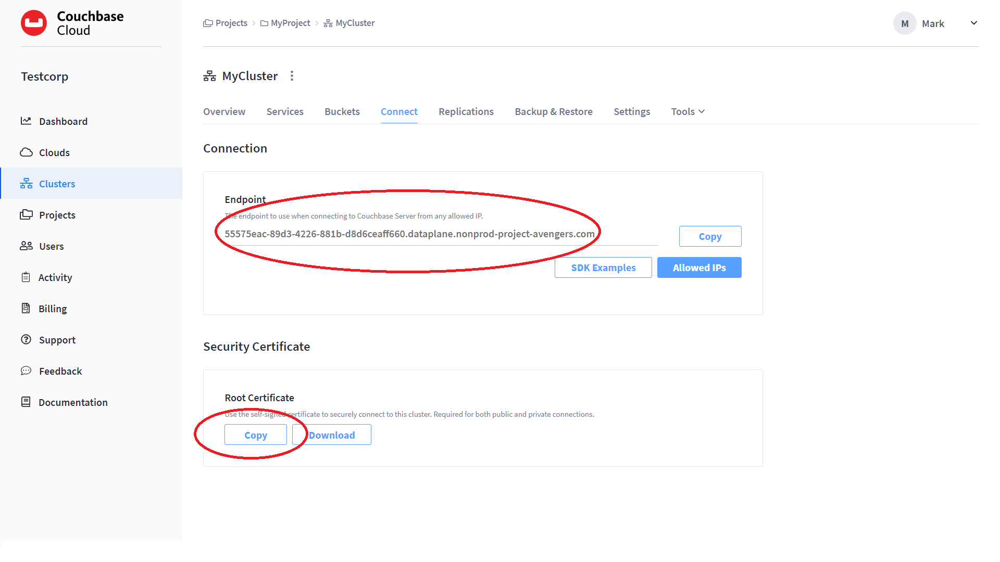Figure 1. .Copy the Couchbase Cloud cluster endpoint URL and your cluster Security Certificate for entering into the CData JDBC driver for Couchbase.
-
-
Note your cluster database username and password, as set in the first tutorial, to connect from BI tools.
To review the database username and password, click Users in the left navigation, click on your username, then note the database user for your cluster.
Install the JDBC Driver and BI Tool
-
Download and follow the instructions to install the CData JDBC Driver For Couchbase (you can use the free trial).
-
Download and follow the instructions to install Tableau Desktop (you can use the free trial).
-
Copy the CData JDBC .jar file to the drivers folder in your Tableau installation.
Go to the
/libfolder under the CData root install folder to copy the .jar file.<_CData install folder_>/CData/CData JDBC Driver for Couchbase 2020/lib
Copy the file
cdata.jdbc.couchbase.jar. -
Paste the
cdata.jdbc.couchbase.jarfile into the Tableau install folder for your operating system.-
Windows: C:\Program Files\Tableau\Drivers
-
Mac: ~/Library/Tableau/Drivers
-
Linux: /opt/tableau/tableau_driver/jdbc
-
-
Restart Tableau to pick up the driver.
Configure the JDBC Connection Using the CData JDBC Driver For Couchbase Interface
-
Open the interface by double clicking
cdata.jdbc.couchbase.jarunder the CData root install folder.<CData install folder>/CData/CData JDBC Driver for Couchbase 2020/lib/cdata.jdbc.couchbase.jar
-
In the Authentication connection properties, add the following settings:
-
User: Insert your cluster database username
-
Password: Insert your cluster database user password
-
Server: Insert your cluster endpoint URL
-
Couchbase Service: Analytics
-
UseSSL: True
-
ConnectionMode: Cloud
-
DNSServer: 8.8.8.8
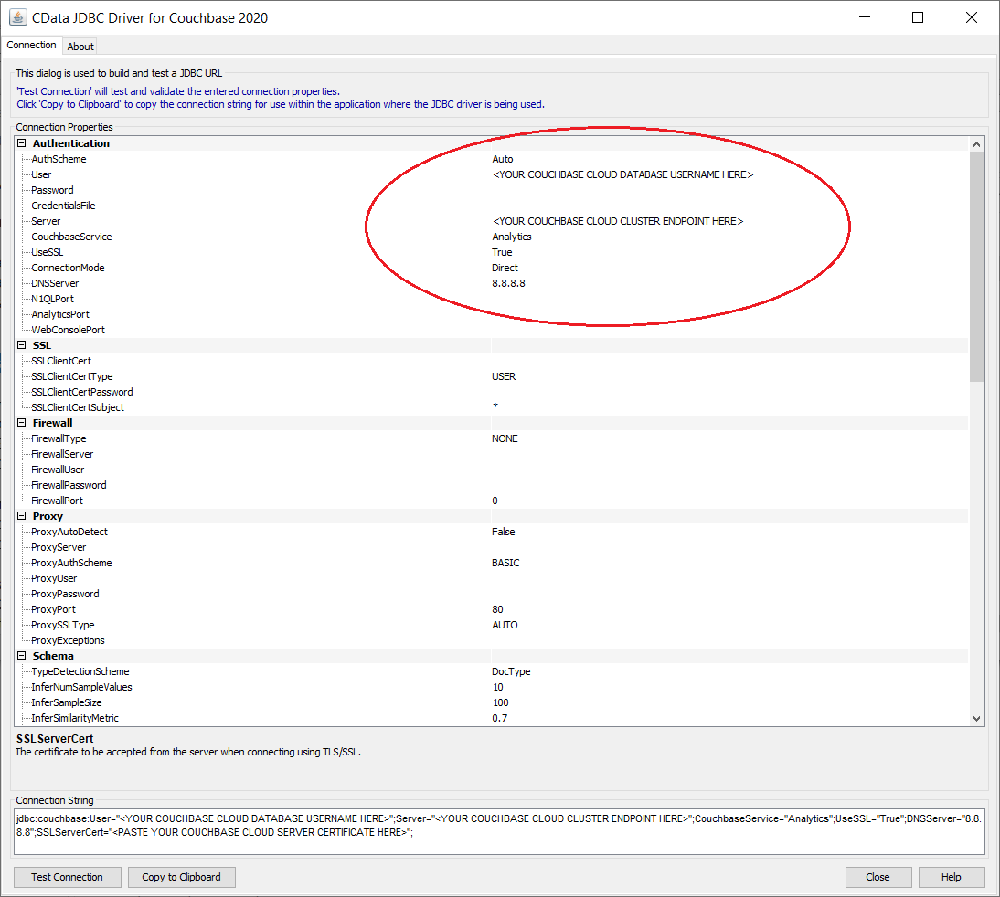
-
-
Under Misc connection properties, add the following setting:
-
SSLServerCert: Paste your copied cluster Server Certificate
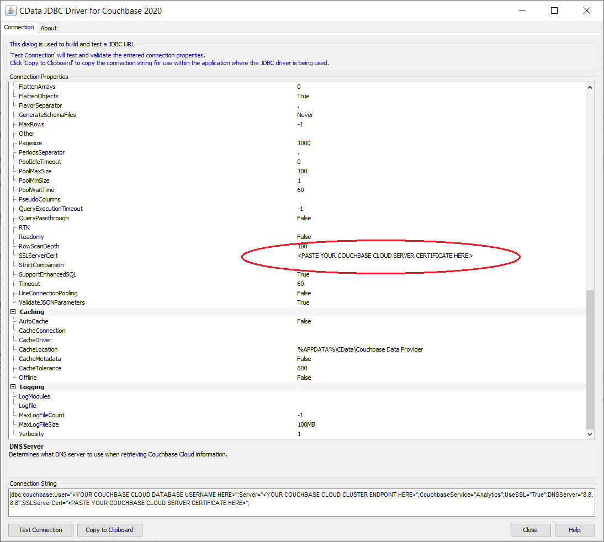
-
-
Click Test Connection to verify the connection.
-
Click “Copy to Clipboard” to copy the JDBC connection string, you will paste the string into Tableau Desktop when connecting.
Connect Tableau Desktop to Couchbase Cloud Cluster
-
Launch Tableau Desktop, then in the left side menu click “Other Databases (JDBC)”, the “Other Databases (JDBC)” properties window displays.
-
In the URL setting, paste the connection string you copied from the CData JDBC Driver for Couchbase interface (you may optionally enter the cluster database username and password into the username and password property settings instead of in the connection string, this will prompt you for valid credentials whenever you refresh the report).
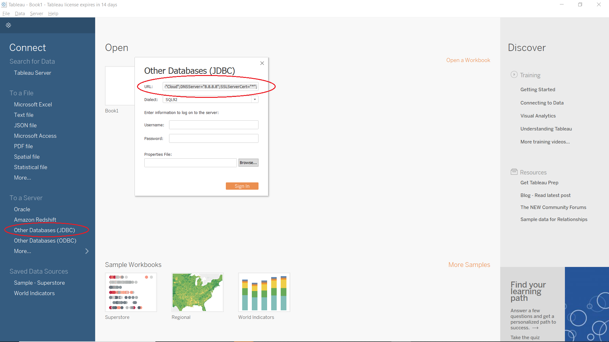 -
Click “Sign in”, the Tableau Desktop Data Source editor displays.
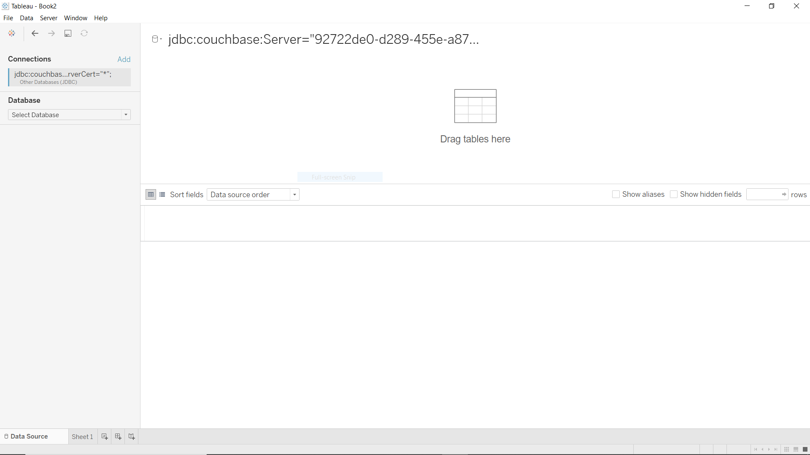 -
In the left side menu under “Databases”, select CData.
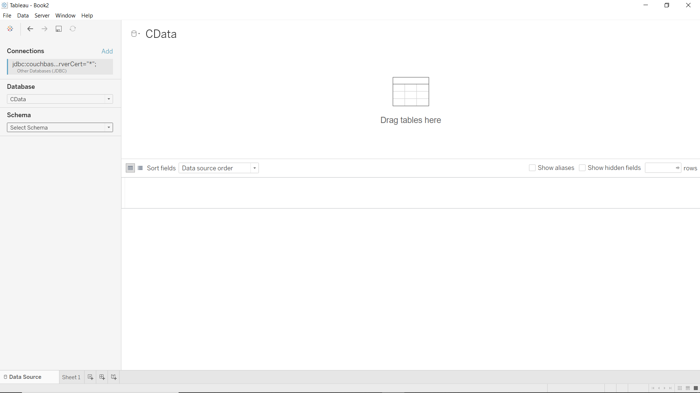 -
In the left side menu under “Schema”, select Couchbase.
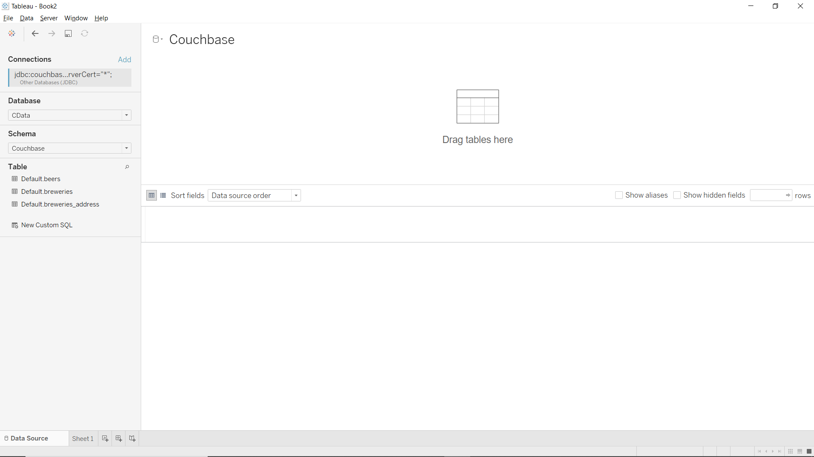 -
In the left side menu under “Table”, you will see the breweries and beers Analytics Datasets we created earlier in this tutorial.
Click on “Default.breweries” and drag to the table pallet
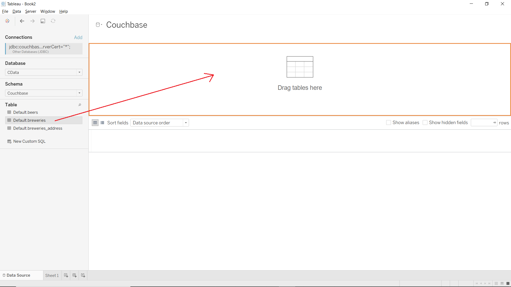 -
Next click “Go to worksheet” to visualize the data.
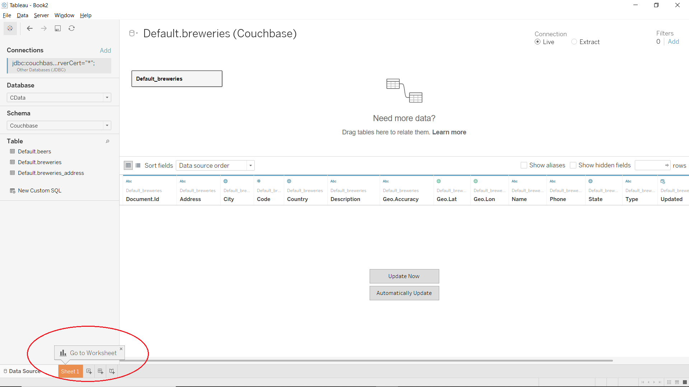In the worksheet editor, the table fields are displayed in the left side menu.
-
We will visualize all of the breweries in the breweries Analytics Dataset by plotting their locations on a map. First we need to convert the latitude and longitude data from a measure to a dimension.
In the tables fields, under Measure Names, on the field “Geo.Lat” and in the drop down property menu select “Convert to Dimension”
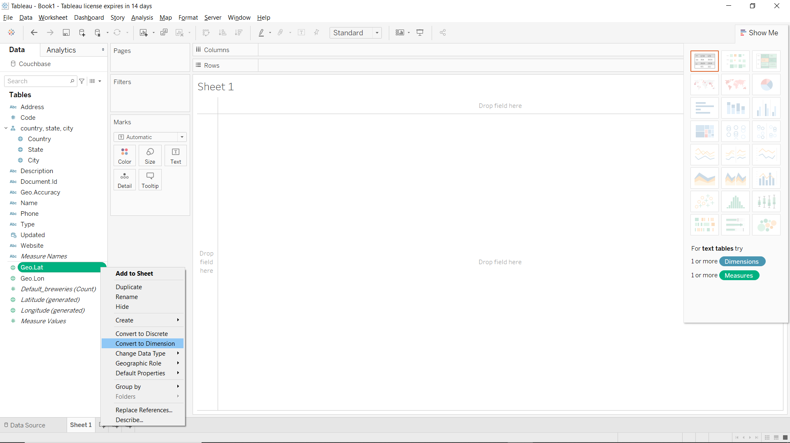Repeat this for the field “Geo.lon” to convert it from a measure to a dimension field.
-
Now lets map the latitude and longitude coordinates.
In the left side menu, click on “Geo.lon” and drag it to “Columns”.
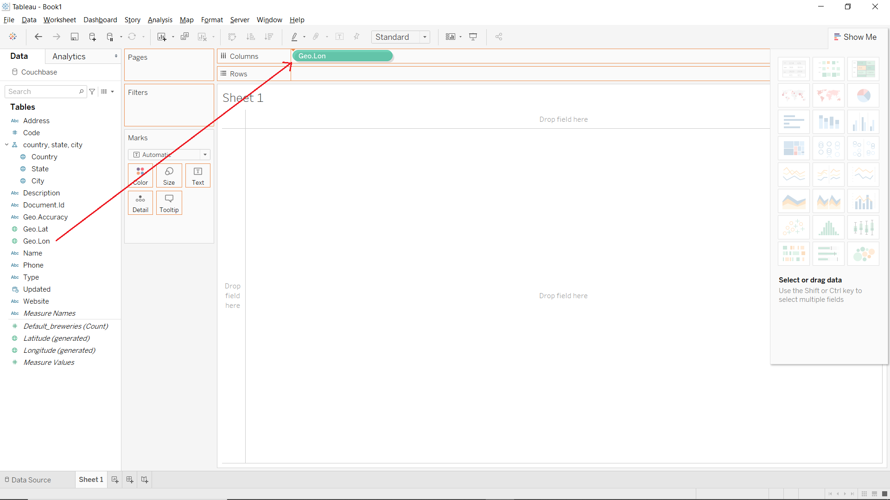Next click on “Geo.lat” and drag it to “Rows”. Tableau Desktop will automatically choose the map visualization based on the lat and lon coordinates.
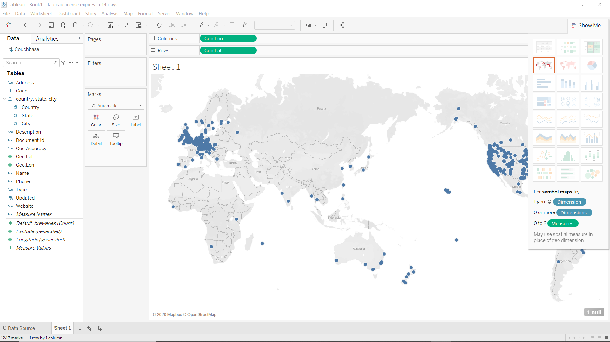
Congratulations! You have successfully connected Tableau Desktop to your Couchbase Cloud Analytics Dataset and created a visualization of the brewery locations, well done!